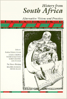

Articles from a special issue of the Radical History Review that map the development of interpretations of the South African past and depart radically from the official history
Articles from a special issue of the Radical History Review that map the development of interpretations of the South African past and depart radically from the official history


 Articles from a special issue of the Radical History Review that map the development of interpretations of the South African past and depart radically from the official history
Articles from a special issue of the Radical History Review that map the development of interpretations of the South African past and depart radically from the official history

|  |
History from South AfricaAlternative Visions and Practicesedited by Joshua Brown, Patrick Manning, Karin Shapiro and Jon Wienerpaper EAN: 978-0-87722-849-3 (ISBN: 0-87722-849-3) |
More starkly than any other contemporary social conflict, the crisis in South Africa highlights the complexities and conflicts in race, gender, class, and nation. These original articles, most of which were written by South African authors, are from a special issue of the Radical History Review, published in Spring 1990, that mapped the development of interpretations of the South African past that depart radically from the official history. The articles range from the politics of black movements in the nineteenth and twentieth centuries to studies of film, television, and theater as reflections of modern social conflict.
History from South Africa is presented in two main sections: discussions of the historiography of South Africa from the viewpoint of those rewriting it with a radical outlook; and investigations into popular history and popular culture—the production and reception of history in the public realm. In addition, two photo essays dramatize this history visually; maps and a chronology complete the presentation. The book provides a fresh look at major issues in South African social and labor history and popular culture, and focuses on the role of historians in creating and interacting with a popular movement of resistance and social change.
Preface – John Brown, Patrick Manning, Karin Shapiro, and Jon Wiener
1. Radical History and South African Society – Belinda Bozzoli and Peter Delius
Part I: Radical Historians and South Africa's Past
2. Suicide or Genocide? Xhosa Perceptions of the Nongqawuse Catastrophe – J.B. Peires
3. Highways, Byways and Cul-de-Sacs: The Transition to Agrarian Capitalism in Revisionist South African History – Helen Bradford
4. The Politics of Black Squatter Movements on the Rand, 1944-1952 – Philip Bonner
5. An Image of Its Own Past? Towards a Comparison of American and South African Historiography – Colin Bundy
6. Literature and History in South Africa – Stephen Clingman
7. Charters from the Past: The African National Congress and Its Historiographical Traditions – Tom Lodge
8. The Unity Movement: Its Legacy in Historical Consciousness – Bill Nasson
9. South African Labor History: A Historiographical Assessment – Jon Lewis
10. Popular Struggle: Black South African Opposition in Transformation – C.R.D. Halisi
11. Buthe-lezi, Inkatha, and the Problem of Ethnic Nationalism in South Africa – Chris Lowe
12. Intellectuals, Audiences and Histories: South African Experiences, 1978-1988 – Belinda Bozzoli
Part II: Photo Essays
13. Labor Tenancy in Bloemhof – Santu Mofokeng
14. Promised Land – Gideon Mendel
Part III: Popular History and Popular Culture
15. Popular History in the Eighties – Luli Callinicos
16. History and History Teaching in Apartheid South Africa – Melanie Walker
17. South African People's History – David Anthony
18. A Positional Gambit: Shaka Zulu and the Conflict in South Africa" – C.A. Hamilton
19. Musical Form and Social History: Research Perspectives on Black South African Music – Deborah James
20. Performing History off the Stage: Notes on Working-Class Theater – Bhekizizwe Peterson
21. "Bearing Witness": Ten Years Towards an Opposition Film Movement in South Africa – Harriet Gavshon
22. Oral History and South African Historians – Paul la Hausse
23. Staffrider Magazine and Popular History: The Opportunities and Challenges of Personal Testimony – A.W. Oliphant
24. Developments in Popular History in the Western Cape in the 1980s – Andre Odendaal
25. The Write Your Own History Project – Leslie Witz
26. Every Picture Tells a Story, Don't It? – Joshua Brown
Chronology: South Africa, 1800-1900
Notes
Contributors
Joshua Brown is Art Director of the American Social History Project at Hunter College and a member of the Radical History Review editorial collective.
Patrick Manning is Professor of History and African-American Studies at Northeastern University. He is the author of a 1982 book on the economic history of Dahomey, Francophone Sub-Saharan Africa, 1880-1985 (1987), and Slavery and African Life (1990). He is also a member of the Radical History Review editorial collective.
Karin Shapiro, a history graduate student at Yale University, studies both American and South African history. She will complete her dissertation, "The Tennessee Coal Miners' Revolt, 1981-92: Convict Labor, Political Culture, and Southern Rural Industrialization" in 1991. She is also a member of the Radical History Review editorial collective.
Jon Wiener teaches History at the University of California, Irvine. He is a member of the Radical History Review editorial collective, and a contributing editor to The Nation.
Contributors: Philip Bonner, Helen Bradford, Colin Bundy, Stephen Clingman, C.R.D. Halisi, Jon Lewis, Tom Lodge, Chris Lowe, Bill Nasson, Gideon Mendel, Santu Mofokeng, David Anthony, Luli Callinicos, Harriet Gavshon, C. A. Hamilton, Deborah James, Paul la Hausse, Andre Odendaal, A. W. Oliphant, Bhekizizwe Peterson, Melanie Walker, Leslie Witz, and the editors.
Critical Perspectives on the Past, edited by Susan Porter Benson, Stephen Brier, and Roy Rosenzweig.
Critical Perspectives on the Past, edited by Susan Porter Benson, Stephen Brier, and Roy Rosenzweig, is concerned with the traditional and nontraditional ways in which historical ideas are formed. In its attentiveness to issues of race, class, and gender and to the role of human agency in shaping events, the series is as critical of traditional historical method as content. Emphasizing that history is itself an interpretation of material events, the series demonstrates that the historian's choices of subject, narrative technique, and documentation are politically as well as intellectually constructed.
© 2015 Temple University. All Rights Reserved. This page: http://www.temple.edu/tempress/titles/862_reg.html.